[12-1] Unix时间戳 — 学习笔记
- 课程：江协科技《STM32入门教程-2023版 细致讲解 中文字幕》
- 视频：BV1th411z7sn?p=41，44:27（2667 秒）
- 素材：242 帧关键帧（每 11 秒，宽 1280px）+ PP-OCRv4 画面硬字幕 OCR（743 段）；关键截图 14 张随笔记收录（源图在
vidsum_out/stm32_p41/frames/，站内图片在assets/images/stm32-41/） - 字幕情况：该集 B 站没有 CC/AI 字幕，文本由画面烧录的中文字幕 OCR 得到（source=subtitle-ocr）；错字主要是
闰→ 「润」（润秒/润年）、秒计数器→ 「利计数器」、时间戳→ 「时间溅」、日期时间→ 「回期时间」、gmtime→ 「amtime」、localtime→ 「ocaltime」、time_t→ 「time+」、夏令时→ 「直今时」、电源→ 「由源」，并混入网页/浏览器文字——这些不是口述内容，已剔除/校正（清单见文末「存疑」）。 - 本集定位：这是模块 12（RTC 实时时钟）的第一节——对应参考手册第 16 章。本集零 STM32 代码：00:00 先翻手册交代本大节位置 → 01:27–06:36 只演示两个成品程序的最终现象（
12-1 读写备份寄存器、12-2 实时时钟，不讲代码）→ 06:36 起回到 PPT 讲 Unix 时间戳、UTC/GMT、闰秒 → 23:39 起在 **Dev-C++（PC 端 C 程序，不是 STM32 工程）**里逐个演示time.h的函数。STM32 侧的 BKP/RTC 外设结构在 [12-2]、代码在 [12-3]。结尾 44:24「那我们下一小节，再见」。
一句话结论
本大节讲 RTC 实时时钟（手册第 16 章），分三小节：本集单独讲 Unix 时间戳（因为 STM32 的 RTC 计数器本质上就是一个秒计数器/时间戳），之后讲 BKP 与 RTC 外设结构，再往后写代码。手册 16.1 RTC 简介：实时时钟是一个独立的定时器，RTC 模块有一组连续计数的计数器，在相应软件配置下可提供时钟日历功能；RTC 模块和时钟配置系统（RCC_BDCR）位于后备区域，所以系统复位或从待机模式唤醒后，RTC 的设置和时间维持不变；系统复位后对后备寄存器和 RTC 的访问被禁止（防止对后备区域 BKP 的意外写操作），要访问需：① 设置 RCC_APB1ENR 的 PWREN 和 BKPEN 位（使能电源接口和后备接口时钟）② 设置 PWR_CR 的 DBP 位（使能对后备寄存器和 RTC 的访问）。片头现象①（12-1 读写备份寄存器）：在 ST-Link 上引一根线模拟 VBAT 电池电源；按键后往两个备份寄存器写入 0x1234、0x5678 再读回，OLED 的 W: 与 R: 一致；只要 VBAT 有电池供电，即使主电源断电，BKP 数据仍保持；按复位键 BKP 数据也不复位；但把 VBAT 也断开（彻底断电）后 BKP 就清零——BKP 本质上不能做到完全掉电不丢失，它更多是为 RTC 服务的。现象②（12-2 实时时钟）：OLED 显示年月日时分秒；按复位键时间继续走、不复位；拔掉系统主电源后时间仍然继续走（靠 VBAT 供电）——这才是真正「掉电不丢时间」。作者的硬件坑：有的芯片 VBAT 的电源还会微弱地给整个系统供电，导致拔掉主电源后系统还有残留供电（还有其他硬件问题），替代办法后续写代码时再说。Unix 时间戳定义：从 UTC/GMT 的 1970 年 1 月 1 日 0 时 0 分 0 秒开始所经过的秒数，不考虑闰秒；时间戳存储在一个秒计数器中（32 位/64 位整型）；世界上所有时区的秒计数器相同，不同时区通过添加偏移得到当地时间（如中国东 8 区：北京＝伦敦＋8 小时）。对照表（画面原表）：
| 秒计数器 | 日期时间（伦敦） | 日期时间（北京） |
|---|---|---|
| 0 | 1970-1-1 0:0:0 | 1970-1-1 8:0:0 |
| 1000000000 | 2001-9-9 1:46:40 | 2001-9-9 9:46:40 |
| 1672588795 | 2023-1-1 15:59:55 | 2023-1-1 23:59:55 |
为什么用秒计数器（好处）：① 简化硬件电路——RTC 里放一个大秒寄存器就行，不用管年月日寄存器、进位、大月小月、平年闰年；② 时间间隔计算方便——两个时刻秒数相减再除一小时秒数即可；③ 存储方便（一个较大的变量）。坏处：占用软件资源——给人看的时候还要做比较复杂的换算。溢出风险：以 32 位有符号为例，最大 2^32/2−1 = 2147483647（约 21 亿多秒）→ 业界称 2038 问题；现代手机/电脑多用 64 位，范围极大、可高枕无忧。时区：地球分 24 个时区，每差一个时区 ±1 小时；所有时区共用一个秒计数器，按所在时区加小时偏移；1970 年之前的时间戳无法表示。时间戳有两种表现形式：① 永不进位的秒计数原值；② 由它计算出的年月日时分秒（要算一年多少秒、一天多少秒，还要考虑大小月/平闰年，步骤固定但麻烦，所以直接用现成库）。UTC/GMT：GMT（Greenwich Mean Time，格林尼治标准时间）以地球自转为基础，把地球自转一周的时间等分为 24 小时；UTC（Universal Time Coordinated，协调世界时）以原子钟为基础，规定铯 133 原子基态的两个超精细能级间在零磁场下跃迁辐射 9,192,631,770 周所持续的时间为 1 秒；当原子钟计时的一天与地球自转一周的时间相差超过 0.9 秒时，UTC 会执行闰秒来保持协调一致。为什么需要 UTC：地球因潮汐/地质活动越转越慢，用「一天」定秒长会让秒长不断变化（光速、音速这些常数就固定不了），所以改用铯原子钟；但纯原子钟计时又会与地球自转脱节（时间长了中午 12 点太阳不在正上方），于是引入闰秒。闰秒示例：上一次闰秒是北京时间 2017 年 1 月 1 日 7 时 59 分 59 秒，下一秒出现 7 时 59 分 60 秒（该分钟共 61 秒）。日常生活中 GMT 与 UTC 可视为一样，手机电脑里写 GMT+8 / UTC+8 都行。时间戳对闰秒没有适应性：每次产生闰秒，时间戳与授时中心的标准时间就差 1 秒（了解即可）。time.h 七个函数：time（获取系统时钟）、gmtime（秒→日期时间·格林尼治）、localtime（秒→日期时间·当地）、mktime（日期时间→秒·当地）、ctime（秒→字符串·默认格式）、asctime（日期时间→字符串·默认格式）、strftime（日期时间→字符串·自定义格式）；另有 clock（程序执行时间）、difftime（两时间差）只提到、未演示。三种数据类型：time_t（typedef 重命名，本平台是 time64_t＝int64，64 位有符号整型）、struct tm（9 个成员：tm_sec 0～59、tm_min 0～59、tm_hour 0～23、tm_mday 1～31、tm_mon 0～11（从 1 月起的月份偏移）、tm_year 从 1900 年起的年数、tm_wday 从周日起的星期几 0～6、tm_yday 0～365、tm_isdst 夏令时 +1/0/−1）、char*（字符串指针）。Dev-C++ 实操要点：time(NULL) 取系统时间（也可用输出参数 time(&time_cnt)）；gmtime 返回指针，赋值给结构体变量要在前面加 *（time_date = *gmtime(&time_cnt);）否则是指针跨级赋值；打印年份要 tm_year + 1900、月份要 tm_mon + 1；localtime 与 gmtime 用法一样，但会自动按本机时区加 8 小时（得到 2023-1-1 23:59:55）；mktime 必须传「当地时间」——传入 localtime 的结果转回去秒数不变，改成 gmtime 的结果就会对不上；mktime 参数没有 const，因为它会回填 tm_wday/tm_yday；ctime/asctime 输出西方习惯格式（Sunday January …），日常少用；strftime(char 数组, 长度, "%H:%M:%S", &time_date) 可自定义格式。结尾强调：重点掌握 localtime 与 mktime。注意：time() 在 STM32 裸机上用不了——PC 能读系统时间，STM32 没有 RTC 就不知道当前时间，要靠 RTC 计数器自己维护秒计数（引出下一小节）。
0. 本集定位：理论课（片头演示成品程序 + Unix 时间戳 + Dev-C++ 实操 time.h）
- 本集零 STM32 代码：片头两个工程（
12-1 读写备份寄存器、12-2 实时时钟）只演示现象、不讲代码；所有代码实操都在 **Dev-C++（PC 端 C 语言程序）**里进行； - 本集任务两个：① 了解 Unix 时间戳到底是什么 ② 会用 C 语言
time.h进行时间戳各种形式的转换； - 作者特别说明：这个知识不特别应用在 STM32 中，学完在别处也能用；
- 片尾 44:24「那我们下一小节，再见」；STM32 侧的 BKP/RTC 外设结构在 [12-2]。
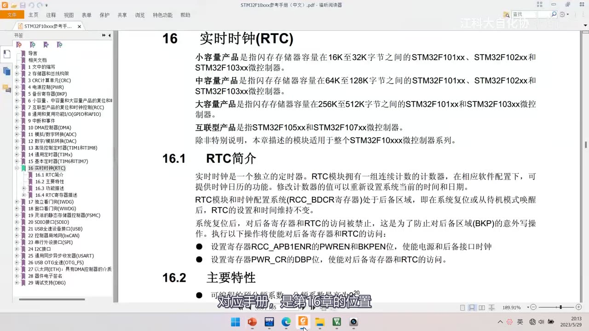
图 1：参考手册第 16 章「实时时钟(RTC)」——16.1 RTC简介：实时时钟是一个独立的定时器，RTC 模块拥有一组连续计数的计数器，在相应软件配置下可提供时钟日历的功能；RTC 模块和时钟配置系统（RCC_BDCR 寄存器）位于后备区域，即系统复位或从待机模式唤醒后 RTC 的设置和时间维持不变；系统复位后对后备寄存器和 RTC 的访问被禁止（防止对后备区域 BKP 的意外写操作），需*设置 RCC_APB1ENR 的 PWREN 和 BKPEN 位、设置 PWR_CR 的 DBP 位；下方 16.2 主要特性；字幕「对应手册，是第16章的位置」*
1. 片头：两个成品程序的现象
1.1 现象①：BKP 备份寄存器（12-1 读写备份寄存器）
- 硬件：在 ST-Link 上引一根线，模拟一个电池的电源（VBAT）；
- 程序：按键后往两个备份寄存器里分别写入
0x1234、0x5678，再读出来显示（OLED 的W:与R:两行）； - 验证结论：
- 写入和读出一样——BKP 可以正常存数据（「其实 BKP 备份寄存器和上一节学的 Flash 存储器类似，都是用来存储数据的」）；
- 只要 VBAT 有电池供电，即使 STM32 主电源断电，BKP 的值仍维持原状；重新上电读出来和断电前一样；
- 按下复位键，BKP 的数据也不会复位；
- 但把 VBAT 也断开（彻底没电）后，BKP 的数据就清零了——BKP 本质上并不能做到完全掉电不丢失；
- 结论：BKP 更多是为了服务 RTC 的（RTC 用它保存配置/状态）。
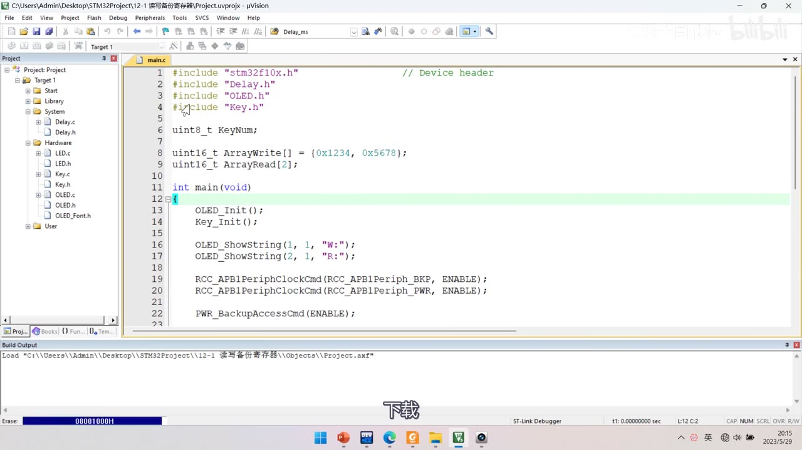
图 2：现象①的 main.c（工程 12-1 读写备份寄存器）——uint16_t ArrayWrite[] = {0x1234, 0x5678};、uint16_t ArrayRead[2];、OLED_ShowString(1, 1, "W:"); / (2, 1, "R:");、RCC_APB1PeriphClockCmd(RCC_APB1Periph_BKP, ENABLE);、RCC_APB1PeriphClockCmd(RCC_APB1Periph_PWR, ENABLE);、PWR_BackupAccessCmd(ENABLE);；字幕「下载」
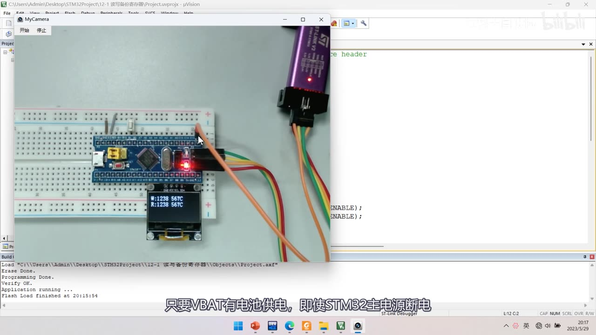
图 3：现象①的 OLED 显示（W: 与 R: 两行；画面显示为 1238 567C，这是显示/采样错位，实际应为 0x1234/0x5678）——面包板上 W25Q64 模块旁的 ST-Link 引出一根线模拟 VBAT 电池电源；字幕「只要VBAT有电池供电，即使STM32主电源断电」
1.2 现象②：RTC 实时时钟（12-2 实时时钟）
- OLED 显示年月日时分秒，靠 VBAT 电池维持；
- 按复位键：时间继续走、不复位；
- 拔掉系统主电源：时间仍然继续走（VBAT 供电）——「就像我们手机一样，要不然时间就错了」；
- 这说明 RTC 是真正掉电不丢时间的（本质上是借 BKP 后备区域实现的）。
1.3 作者的硬件坑
- 坑①：有的芯片 VBAT 的电源还会微弱地给整个系统供电，导致拔掉主电源后系统还有残留供电（现象不明显但存在）；
- 坑②：还有别的硬件问题（口述未展开）；
- 替代办法：后续写代码的时候再说。
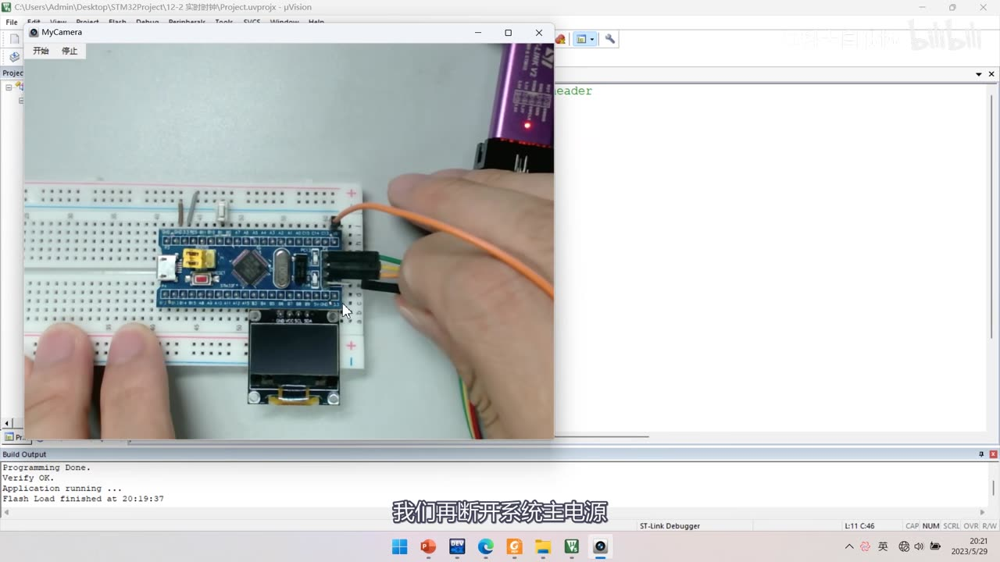
图 4：现象②（工程 12-2 实时时钟）——作者正用手拔掉系统主电源线，观察 RTC 时间是否继续走；字幕「我们再断开系统主电源」
2. Unix 时间戳
2.1 定义
- Unix 时间戳（Unix Timestamp）：从 UTC/GMT 的 1970 年 1 月 1 日 0 时 0 分 0 秒开始所经过的秒数，不考虑闰秒；
- 时间戳存储在一个秒计数器中，秒计数器为 32 位/64 位的整型变量；
- 世界上所有时区的秒计数器相同，不同时区通过添加偏移得到当地时间；
- Unix 时间戳最早在 Unix 系统使用，之后很多由 Unix 演变的系统（Linux、Windows、安卓等）都继承了这套规定；
- 对计算机来说：一个永不进位的秒数，无论是存储还是计算都非常方便，所以在程序底层应用广泛；对人来说：一长串秒数难记难理解——所以需要能双向转换。
2.2 秒计数器 vs 日期时间（对照表）
| 秒计数器 | 日期时间（伦敦） | 日期时间（北京） |
|---|---|---|
| 0 | 1970-1-1 0:0:0 | 1970-1-1 8:0:0 |
| 1000000000 | 2001-9-9 1:46:40 | 2001-9-9 9:46:40 |
| 1672588795 | 2023-1-1 15:59:55 | 2023-1-1 23:59:55 |
- 年/月/日/时/分/秒计时系统是每 60 秒进 1 分钟、每 60 分钟进 1 小时、之后继续进位到日、月、年；
- 秒计数器则永不进位：60 秒就是 60、100 秒就是 100、千秒万秒一亿秒都直接加下去。
2.3 为什么用秒计数器
好处：
- 简化硬件电路：设计 RTC 时放一个大秒寄存器即可，不用考虑年月日寄存器、进位、大月小月、平年闰年——对硬件设计非常友好；
- 时间间隔计算方便：两个时刻的秒数相减再除一小时的秒数，就能很快算出间隔（比用年月日时分秒算容易得多）；
- 存储方便：存一个比较大的变量即可。
坏处：比较占用软件资源——给人看的时候，软件要做一遍比较复杂的计算（换算成年月日时分秒）。
2.4 存储格式与溢出风险
- 秒计数器可以用 32 位或 64 位整型存储；以32 位有符号为例，最大值为
2^32/2 − 1 = 2147483647——约 21 亿多秒（作者说「大家可以拿计算器算一下」）； - 这个数只够用到 2038 年前后，业界称 2038 问题，可能导致很多不健全的程序出错；
- 现代手机/电脑多用 64 位时间戳，能存储的时间范围非常非常大，「总之一对于人类来说完全可以高枕无忧了」；
- 本课程 STM32 的 RTC 计数器是 32 位的（详见 [12-2]）。
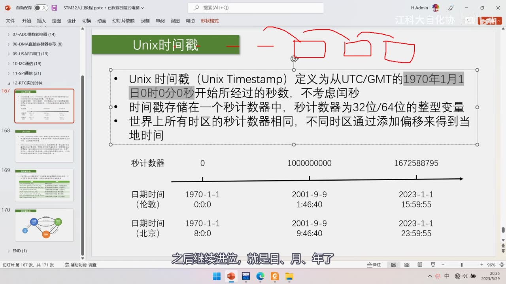
*图 5：PPT「Unix时间戳」——定义：Unix 时间戳定义为从 UTC/GMT 的 1970 年 1 月 1 日 0 时 0 分 0 秒开始所经过的秒数、不考虑闰秒；时间戳存储在一个秒计数器中，秒计数器为 32 位/64 位的整型变量；世界上所有时区的秒计数器相同，不同时区通过添加偏移得到当地时间；下方是秒计数器 0/1000000000/1672588795 与伦敦、北京日期时间的对照表；红笔在标题处画框；字幕「之后继续进位，就是日、月、年了」*
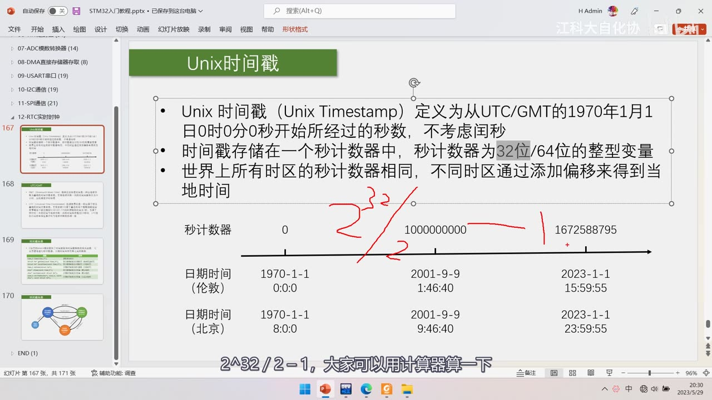
图 6：同页 +「32 位/64 位」被灰色高亮 + 红笔写 2^32/2 ——讲 32 位有符号秒计数器的最大值；字幕「2^32/2−1，大家可以拿计算器算一下」
2.5 时区与时间轴
- 地球分 24 个时区，每差一个时区 ±1 小时；
- 所有时区共用一个秒计数器，各自按所在时区加小时偏移得到当地时间；
- 例如：秒计数器 0 对应伦敦 0 点，中国在东 8 区，对应北京就是 8 点；
- 时间轴：起点是人为规定的伦敦时间 1970 年 1 月 1 日 0 点；1970 年之前的时间戳无法表示；
- 时间戳有两种表现形式：① 永不进位的秒计数原值；② 由它计算出的年月日时分秒——后者要算「一年多少秒、一天多少秒、现在是第几天、第几时几分几秒」，还要考虑大小月、平年闰年，计算麻烦但步骤固定，所以直接用现成的库函数（
time.h），不用自己了解计算步骤。
3. UTC 与 GMT、闰秒
3.1 GMT（格林尼治标准时间）
- 英文全称 Greenwich Mean Time，中文译「格林尼治标准时间」（也译格林威治标准时间/格林威治平均时间，都是一个意思）；
- 格林尼治是英国伦敦的一个地名，所以可以简单理解为伦敦标准时间；
- 是一种以地球自转为基础的时间计量系统：把地球自转一周的时间间隔等分为 24 小时，以此确定计时标准；
- 这种计时方法很符合直觉（「一天」就定义为地球自转一周）；以前全球计时都用 GMT，不同时区再加对应小时偏移。
3.2 GMT 的缺陷与 UTC 的引入
- 地球自转一周的时间其实不固定：由于潮汐、地质活动等原因，地球目前越转越慢；
- 如果用「一天」来定义时间基准，那秒长就会不断变长——而光速、音速这类常数就不能固定了；
- 所以科学家提出了新的计时系统：UTC（Universal Time Coordinated，协调世界时）；
- UTC 以原子钟为基础：规定铯 133 原子基态的两个超精细能级间在零磁场下跃迁辐射 9,192,631,770 周所持续的时间为 1 秒——秒长就此固定（最初定义的秒长与 1970 年的 GMT 保持一致）。
3.3 为什么要闰秒
- 用恒定不变的秒计时，而地球自转越来越慢，两者会逐渐出现偏差；
- 时间长了，中午 12 点太阳可能不在正上方（甚至越来越偏）——这是不能接受的；
- 但科学家对精度有极致追求，不能容忍 1 秒的偏差；
- 于是在原子钟基础上加入闰秒机制：当原子钟计时的一天与地球自转一周的时间相差超过 0.9 秒时，UTC 会执行闰秒——计时标准恒定不变，但计时系统多打一秒去追上地球自转；
- 闰秒示例：上一次闰秒是北京时间 2017 年 1 月 1 日 7 时 59 分 59 秒，下一秒时钟出现 7 时 59 分 60 秒——这一分钟总共 61 秒；
- 恒定的时间标准 + 闰秒机制，既满足科研需要又满足人类生活需要；UTC 是现在的时间标准，比 GMT 更精确；
- 副作用：闰秒机制可能造成一些程序 bug；时间戳对闰秒没有适应性——每次产生闰秒，时间戳与授时中心的标准时间就差 1 秒（了解即可）；
- 日常生活中 GMT 与 UTC 可以看成一样的：手机/电脑时间设置里写 GMT+8 或 UTC+8 都可以，表示使用东 8 区时间。
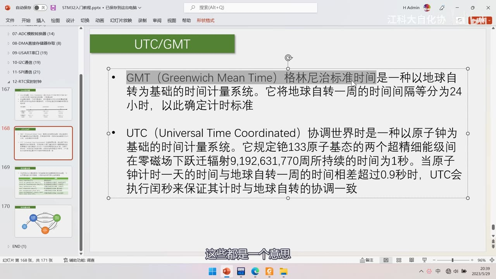
图 7：PPT「UTC/GMT」——GMT（Greenwich Mean Time）格林尼治标准时间是一种以地球自转为基础的时间计量系统，它把地球自转一周的时间间隔等分为 24 小时，以此确定计时标准；UTC（Universal Time Coordinated）协调世界时是一种以原子钟为基础的时间计量系统，它规定铯 133 原子基态的两个超精细能级间在零磁场下跃迁辐射 9,192,631,770 周所持续的时间为 1 秒；当原子钟计时一天的时间与地球自转一周的时间相差超过 0.9 秒时，UTC 会执行闰秒来保证其计时与地球自转的协调一致；字幕「这些都是一个意思」
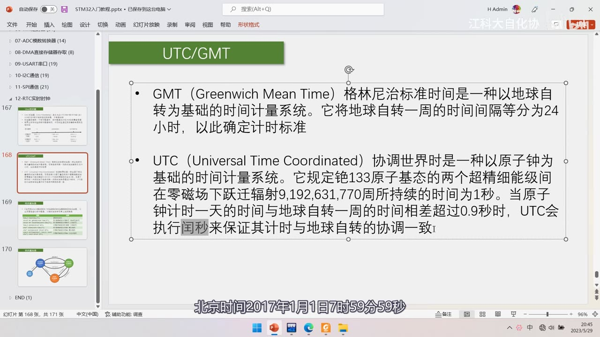
图 8：同页 +「闰秒」被灰色高亮——讲上一次闰秒在*北京时间 2017 年 1 月 1 日 7 时 59 分 59 秒，下一秒出现 7 时 59 分 60 秒；字幕「北京时间2017年1月1日7时59分59秒」*
4. C 语言 time.h 与三种数据类型
4.1 七个函数
| 函数原型 | 作用 |
|---|---|
time_t time(time_t*); |
获取系统时钟（返回当前秒计数器） |
struct tm* gmtime(const time_t*); |
秒计数器 → 日期时间（格林尼治时间） |
struct tm* localtime(const time_t*); |
秒计数器 → 日期时间（当地时间） |
time_t mktime(struct tm*); |
日期时间 → 秒计数器（当地时间） |
char* ctime(const time_t*); |
秒计数器 → 字符串（默认格式） |
char* asctime(const struct tm*); |
日期时间 → 字符串（默认格式） |
size_t strftime(char*, size_t, const char*, const struct tm*); |
日期时间 → 字符串（自定义格式） |
- 另有
clock（返回程序执行起处理器时钟所用时间）与difftime（返回两个时间相差的秒数time1−time2）——只提到、未演示； - 作者推荐看菜鸟教程的
time.h页面（含讲解与例子），函数可以按需逐个点开学习。
4.2 三种数据类型
(1) 秒计数器类型 time_t
time_t是一个typedef重命名的类型；在 Dev-C++（MinGW）里展开后是time64_t，实际上就是int64——64 位有符号整型；- 如果没有特别声明（如
_USE_32BIT_TIME_T），默认用 64 位，不用担心溢出； - 用来存储时间戳里那个一直自增的秒数。
(2) 日期时间类型 struct tm
- 定义在
time.h里，是封装好的结构体类型，用struct tm两个词作类型名，后跟变量名； - 9 个成员：
| 成员 | 含义 | 取值范围 |
|---|---|---|
tm_sec |
秒 | 0～59（有些实现含闰秒到 61） |
tm_min |
分 | 0～59 |
tm_hour |
时（从午夜起） | 0～23 |
tm_mday |
日 | 1～31 |
tm_mon |
月（从 1 月起的偏移） | 0～11（0 是 1 月） |
tm_year |
年（从 1900 年起的年数） | 如 123 表示 2023 年 |
tm_wday |
星期（从周日起的偏移） | 0～6（0 是周日） |
tm_yday |
一年中的第几天 | 0～365 |
tm_isdst |
是否使用夏令时 | +1 使用 / 0 不使用 / −1 不知道 |
- 两个偏移要特别注意：
tm_year的偏移是 1900（时间戳的起点是 1970，两者不一样），所以真实年份＝tm_year+1900；tm_mon从 0 开始，所以真实月份＝tm_mon+1； - 夏令时（
tm_isdst）：欧美大部分国家和其他地区少部分国家还在用，我国曾经用过一段时间、现在已经不用——简单说就是为了鼓励夏天早睡早起、节约用电而设计；本集只解释含义，不展开实现； - 写法差异：
time.h里是struct tm { ... };（没加typedef），而我们 STM32 库函数里习惯typedef struct { ... } 新名字;——两种写法效果一样，只是使用时类型名要写struct tm。
(3) 字符串类型 char*
char*是 char 型数据的指针，用来指向一个表示时间的字符串（如ctime/asctime/strftime的输出）。
4.3 转换关系图
- 系统时钟 --
time()--> 秒计数器time_t； time_t--gmtime()/localtime()--> 日期时间struct tm（localtime会自动按本机时区加小时偏移）；struct tm--mktime()--> 秒计数器time_t（逆过程，要用当地时间）；time_t--ctime()-->char*；struct tm--asctime()-->char*；struct tm--strftime()-->char*（自定义格式）。
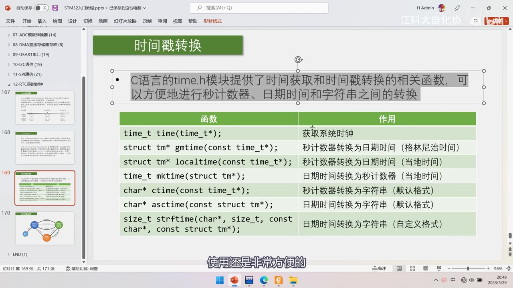
图 9：PPT「时间戳转换」函数总表——C 语言 time.h 模块提供时间获取和时间戳转换的相关函数，可方便地进行秒计数器、日期时间、字符串之间的转换；表中七行分别为 time_t time(time_t*) 获取系统时钟、struct tm* gmtime(const time_t*) 秒→日期时间（格林尼治）、struct tm* localtime(const time_t*) 秒→日期时间（当地）、time_t mktime(struct tm*) 日期时间→秒（当地）、char* ctime(const time_t*) 秒→字符串（默认格式）、char* asctime(const struct tm*) 日期时间→字符串（默认格式）、size_t strftime(char*, size_t, const char*, const struct tm*) 日期时间→字符串（自定义格式）；字幕「使用还是非常方便的」
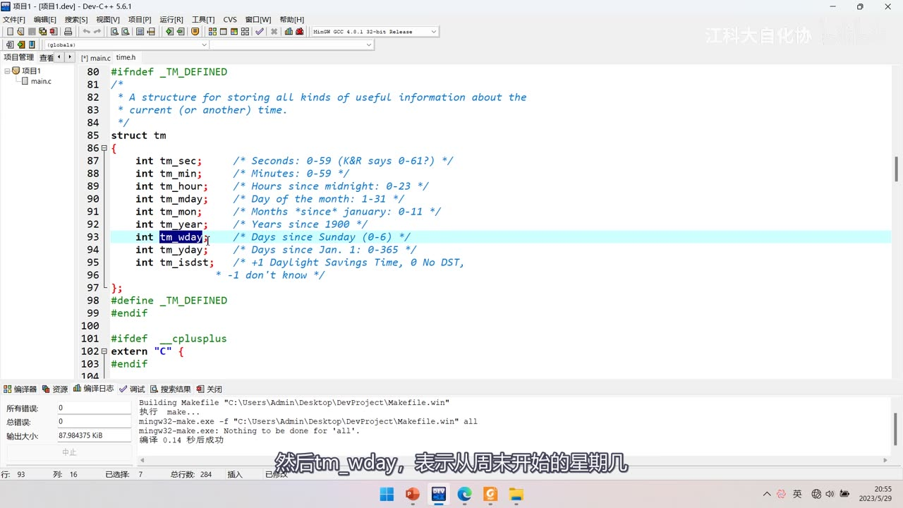
图 10：Dev-C++ 里打开 time.h 的 struct tm 定义原文——tm_sec（Seconds: 0-59）、tm_min（0-59）、tm_hour（Hours since midnight: 0-23）、tm_mday（Day of the month: 1-31）、tm_mon（Months since january: 0-11）、tm_year（Years since 1900）、tm_wday（Days since Sunday: 0-6，高亮）、tm_yday（Days since Jan. 1: 0-365）、tm_isdst（+1 Daylight Savings Time, 0 No DST, -1 don't know）；字幕「然后tm_wday，表示从周日开始的星期几」
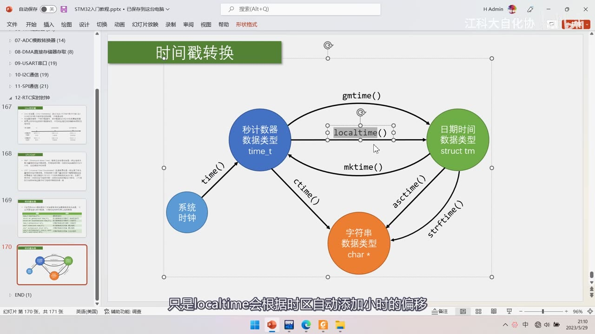
图 11：PPT「时间戳转换」关系图——系统时钟 --time()--> 秒计数器 time_t；time_t --gmtime()/localtime()--> 日期时间 struct tm；struct tm --mktime()--> 秒计数器；time_t --ctime()--> char*；struct tm --asctime()/strftime()--> char*；字幕「只是localtime会根据时区自动添加小时的偏移」
5. Dev-C++ 实操（PC 端 C 程序，不是 STM32 工程）
5.1 准备
- 打开 Dev-C++（任何 C 语言编译器都可以），先建一个最简单的 HelloWorld 工程，在 main.c 里
#include <stdio.h>+#include <time.h>； - 定义三个全局变量（对应三种数据类型）：
time_t time_cnt;（秒计数器）、struct tm time_date;（日期时间）、char *time_str;（字符串）； - 作者提醒：这些函数大量涉及指针操作，指针不熟的建议先补指针教程。
5.2 time()：获取系统时间
time_cnt = time(NULL); /* 用返回值 */
time(&time_cnt); /* 或用输出参数，效果一样 */
printf("%d\n", time_cnt); /* 打印当前时间戳秒数 */
- 参数不需要时可以给
NULL；返回值就是当前时间戳，类型time_t； - 把返回值赋给
time_cnt就得到了时间；用在线时间戳转换工具可以验证这个数对不对； - 重点：这个函数在电脑里可以直接读电脑时间，但在 STM32 里用不了——STM32 是裸机系统，不知道现在是啥时间（要靠 RTC 计数器自己维护，引出下一小节）。
5.3 gmtime()：秒 → 格林尼治日期时间
time_cnt = 1672588795; /* 手动给一个秒数做测试 */
time_date = *gmtime(&time_cnt); /* 返回值是指针，赋值给结构体要加 * */
printf("%d\n", time_date.tm_year + 1900);
printf("%d\n", time_date.tm_mon + 1);
printf("%d\n", time_date.tm_mday);
/* …tm_hour / tm_min / tm_sec / tm_wday 同理 */
gmtime返回struct tm*（指针），而左边time_date是结构体变量——指针不能直接赋给变量，所以要在右边加*取内容（另一种办法是把左边定义成指针，两者等价）；- 打印时年份要
+1900、月份要+1，否则会打印出 123 年、0 月； - 结果：
1672588795→ 伦敦时间 2023-1-1 15:59:55、星期日，与 PPT 对照表一致。
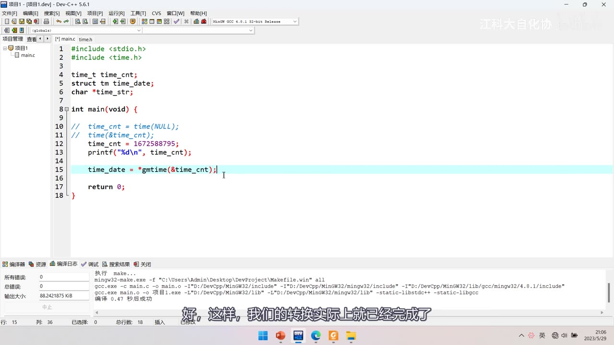
*图 12：gmtime 调用代码——#include <stdio.h>、#include <time.h>；全局 time_t time_cnt;、struct tm time_date;、char *time_str;；main 里注释掉的 time_cnt = time(NULL); / time(&time_cnt);，time_cnt = 1672588795;、printf("%d\n", time_cnt);，以及 time_date = *gmtime(&time_cnt);（高亮，注意前面的 *）；字幕「好，这样，我们的转换实际上就已经完成了」*
5.4 localtime()：秒 → 当地日期时间
- 用法和
gmtime完全一样，只是函数名换成localtime； - 区别：
localtime会根据本机时区自动添加小时的偏移——作者在 东 8 区，所以得到 2023-1-1 23:59:55（比伦敦多 8 小时），与 PPT 对照表一致。
5.5 mktime()：日期时间 → 秒（必须传当地时间）
time_cnt = mktime(&time_date); /* 传入日期时间结构体的地址 */
printf("%d\n", time_cnt);
- 是上面两个函数的逆过程；参数是日期时间结构体指针；
- 必须传「当地时间」：把刚才
localtime得到的结果转回去，秒数和最初的 1672588795 完全一样； - 反例：如果把
localtime改成gmtime（即传入伦敦时间）再mktime，得到的秒数就和最初不一样——说明mktime是按当地时间解析的； - 为什么参数没有
const：因为mktime算秒数的同时会回填tm_wday（星期）和tm_yday（一年第几天）——所以你传进去的星期参数实际上不作为输入。
5.6 ctime() / asctime()：转成默认格式字符串
time_str = ctime(&time_cnt); printf(time_str); /* time_t → 字符串 */
time_str = asctime(&time_date); printf(time_str); /* struct tm → 字符串 */
- 两者输出完全相同的默认格式字符串，例如
Sunday January 1 23:59:55 2023； - 这是西方国家的习惯格式，中国一般不用这么「奇怪」的格式，所以这两个函数用得不多，了解即可。
5.7 strftime()：自定义格式
char str[50];
strftime(str, 50, "%H:%M:%S", &time_date);
printf("%s\n", str);
- 四个参数：① 字符数组 ② 数组长度 ③ 格式字符串 ④ 日期时间结构体指针；
- 格式占位符参照菜鸟教程：
%H小时、%M分钟、%S秒（还有日期等其他格式可自行尝试）；占位符会被替换成具体值，其他符号保留原样； - 结果就是 23:59:55 这种「小时-分钟-秒」格式。
5.8 结尾：重点掌握哪两个
time.h里不太重要的函数：clock（计算程序执行了多长时间）、difftime（计算两个时间之间的差值）——了解即可；- 必须重点掌握的是
localtime与mktime这两个（作者原话），其他了解即可。
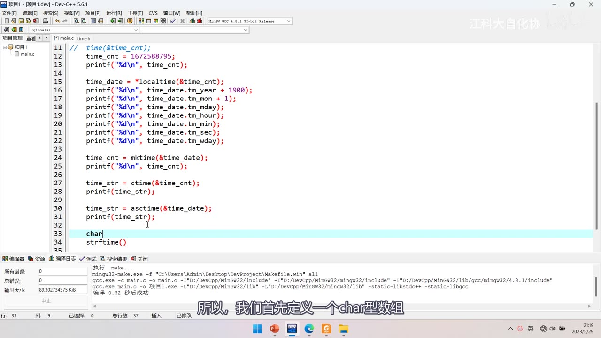
图 13：完整转换代码（Dev-C++）——time_cnt = 1672588795;、time_date = *localtime(&time_cnt);、逐行打印 tm_year + 1900/tm_mon + 1/tm_mday/tm_hour/tm_min/tm_sec/tm_wday、time_cnt = mktime(&time_date);、time_str = ctime(&time_cnt); printf(time_str);、time_str = asctime(&time_date); printf(time_str);，最后开始写 char … + strftime(…)；字幕「所以，我们首先定义一个char型数组」
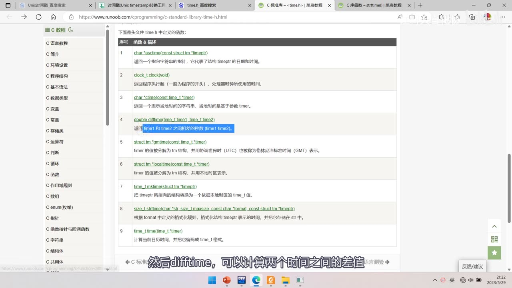
图 14：菜鸟教程「C 标准库 - <time.h>」页面函数表——9 条：asctime、clock、ctime、difftime（高亮：返回 time1 和 time2 之间相差的秒数 (time1-time2)）、gmtime、localtime、mktime、strftime、time；字幕「然后difftime，可以计算两个时间之间的差值」
坑与易错点
gmtime/localtime返回指针：赋给结构体变量要加*（time_date = *gmtime(&cnt);），否则是指针与变量的跨级赋值，编译不过。- 打印年份要
+1900、月份要+1：tm_year是从 1900 起的偏移、tm_mon从 0 开始（0 表示 1 月）。 tm_year的偏移是 1900，与时间戳起点 1970 不是一回事，别混。localtime与gmtime用法相同但结果差 8 小时（东 8 区）：前者自动按时区加偏移。mktime必须传当地时间：传gmtime的结果换算回去会得到不同的秒数。mktime参数没有const：它会回填tm_wday/tm_yday，传入的星期不作为输入。- 32 位有符号秒计数器最大约 21 亿秒（
2^32/2−1），存在 2038 问题；现代系统多用 64 位。 - 时间戳不考虑闰秒：每次闰秒会与授时中心标准时间差 1 秒，程序要注意。
- BKP 不能完全掉电不丢失：VBAT 断了就清零；它的存在主要是为 RTC 服务。
- RTC 才是掉电不丢时间：靠 VBAT 后备区域供电，复位/主电源断开时间都继续走。
time()不能直接用在 STM32 裸机上：STM32 没有「系统时间」可读，要用 RTC 计数器自己维护秒数。- GMT 与 UTC 日常可视为一样：写 GMT+8 / UTC+8 都表示东 8 区。
clock/difftime本集未演示：只需知道用途（程序运行时间、两时间差）。- 夏令时
tm_isdst：+1 使用 / 0 不使用 / −1 不知道；我国现已不用。
时间轴
| 时间 | 内容 |
|---|---|
| 0:09 | 课程来到第 12 节，讲 RTC 实时时钟 |
| 0:12 | 对应手册第 16 章的位置 |
| 1:03 | 这一大节计划分三小节讲 |
| 1:05 | 第一小节单独讲 Unix 时间戳 |
| 1:11 | 要使用 STM32 的 RTC，学时间戳很有必要 |
| 1:16 | 之后讲 BKP 和 RTC 外设结构 |
| 1:27 | 先看最终的程序现象 |
| 1:31 | 本集一共有两个示例代码 |
| 1:42 | 先看第一个代码 |
| 1:47 | 在 ST-Link 上引一根线 |
| 1:54 | 这根线模拟一个电池的电源 |
| 2:10 | 这个程序的目的是往备份寄存器写数据再读出来 |
| 2:17 | 目前 W 是写的内容，还没写入数据 |
| 2:24 | 按一下按键 |
| 2:27 | 在两个备份寄存器中分别写入 0x1234 |
| 2:32 | 之后读出来也是 0x1234 |
| 2:35 | 写入和读出一样，没问题 |
| 2:41 | 读出来和写入一样，都没问题 |
| 2:44 | BKP 备份寄存器和 Flash 存储器类似，都是存数据的 |
| 3:05 | BKP 的值也可以维持原状 |
| 3:21 | 直接读出 BKP，数据和断电之前一样 |
| 3:30 | 并且在系统复位后 |
| 3:38 | 再次拔掉主电源、重新上电 |
| 3:41 | BKP 的数据就清零了 |
| 3:43 | 因为 BKP 本质上并不能完全掉电不丢失 |
| 3:51 | 这就是 BKP 备份寄存器的特性 |
| 4:02 | 这就是第一个代码的现象 |
| 4:07 | 它更多的是为 RTC 服务的 |
| 4:10 | 接着看第二个代码：实时时钟 |
| 4:18 | 这就是实时时钟的现象 |
| 4:20 | 把这个线插回去 |
| 4:39 | 这个用途等会儿再讲 |
| 4:48 | 先看一下，用途写代码时再研究 |
| 4:50 | 这就是实时时钟的显示 |
| 4:57 | 实时时钟光有显示还不够 |
| 5:02 | 首先是复位：既然在计时 |
| 5:04 | 按下复位键，时间继续运行、不会复位 |
| 5:07 | 实时时钟在系统主电源断电后 |
| 5:12 | 就像手机一样，要不然时间就错了 |
| 5:36 | 这就是 RTC 实时时钟的程序现象 |
| 5:44 | 它其实是借用 BKP 来实现的 |
| 5:54 | 测试时遇到的硬件 bug |
| 5:57 | 有的芯片 VBAT 的电源会微弱地给整个系统供电 |
| 6:04 | 导致主电源拔掉后系统还有残留供电 |
| 6:13 | 这是其中一个问题 |
| 6:25 | 替代方法后续写代码时再说 |
| 6:36 | 程序现象就看到这里 |
| 6:37 | 回到 PPT 看时间戳这个知识点 |
| 6:48 | 什么是 UTC 和 GMT |
| 6:52 | 时间戳里的秒计数器和日期时间如何转换 |
| 6:58 | 这涉及 C 语言的 time.h 函数库 |
| 7:08 | 本小节的任务有两个 |
| 7:10 | 一是了解时间戳到底是什么东西 |
| 7:14 | 二是会使用 C 语言 time.h 里的这些函数 |
| 7:24 | 这个知识不特别应用在 STM32 中 |
| 7:31 | 学完之后在别的地方也能用到 |
| 7:34 | 看第一页 PPT：Unix 时间戳 |
| 7:37 | Unix 时间戳最早是在 Unix 系统使用的 |
| 7:49 | 目前 Linux、Windows、安卓等系统都继承了它的规定 |
| 8:03 | 那看一下第一条 |
| 8:19 | 这里大家可能有疑问：UTC/GMT 是什么 |
| 8:27 | 闰年、闰月这些用得比较多 |
| 8:29 | 但这个闰秒又是个什么东西 |
| 8:30 | 这两个知识点下一节 PPT 再讲 |
| 8:35 | 现在简单理解：时间戳是一个计数器数值 |
| 8:45 | 到现在为止总共经过的秒数 |
| 8:54 | 年月日时分秒的计时系统 |
| 8:57 | 每 60 秒进位一次记为 1 分钟 |
| 9:00 | 每 60 分钟进位一次记为 1 小时 |
| 9:02 | 之后继续进位就是日、月、年 |
| 9:08 | 假定 1970 年 1 月 1 日 0 点整为 0 秒 |
| 9:13 | 之后就永远用基本的秒来计时、永不进位 |
| 9:18 | 60 秒就是 60 秒，100 秒就是 100 秒 |
| 9:21 | 千秒、万秒、一亿秒 |
| 9:23 | 无论这个数有多大，都不进位 |
| 9:28 | 从 1970 年计到现在，这个秒数已经非常大 |
| 9:36 | 对人类来说这个 16 亿秒又难记又难理解 |
| 9:41 | 但对计算机来说一个永不进位的秒 |
| 9:44 | 无论是存储还是计算都非常方便 |
| 9:47 | 所以时间戳在程序底层应用非常广泛 |
| 9:51 | 秒计数器和日期时间可以相互转换 |
| 9:59 | 需要给人观看时就要转换 |
| 10:07 | 用这样一个很大的秒数来表示时间有很多好处 |
| 10:08 | 第一，简化硬件电路 |
| 10:10 | 设计 RTC 硬件时直接弄一个很大的秒寄存器就行 |
| 10:15 | 不需要考虑年月日寄存器、进位 |
| 10:19 | 大月小月、平年闰年这些东西 |
| 10:25 | 第二，时间间隔的计算非常方便 |
| 10:29 | 比如 1 月 1 号 8 点到 3 月 1 号 18 点间是多少小时 |
| 10:34 | 用年月日时分秒算比较麻烦 |
| 10:39 | 但如果用秒计数器 |
| 10:41 | 只要把两个时刻的秒数相减 |
| 10:44 | 再除一个小时的秒数 |
| 10:46 | 就可以很快算出两个时刻的间隔 |
| 10:49 | 第三，存储方便 |
| 10:51 | 存秒数，一个比较大的变量就行了 |
| 10:57 | 当然用秒计数器表示时间也有坏处 |
| 11:00 | 就是比较占用软件资源 |
| 11:06 | 软件都要进行一通比较复杂的计算 |
| 11:11 | 这就是使用时间戳的好处和坏处 |
| 11:16 | 时间戳存储在一个秒计数器中 |
| 11:19 | 秒计数器为 32 位/64 位的整型变量 |
| 11:26 | 计算机为了存储这样一个永不进位的秒数 |
| 11:30 | 这个数据类型还是要定义大一些 |
| 11:34 | 变量类型在不同系统中定义不一样 |
| 11:41 | 32 位有符号数能表示的最大数字是 |
| 11:45 | 大家可以拿计算器算一下 |
| 11:51 | 这个数是 21 亿多，其实是有溢出风险的 |
| 12:04 | 按 32 位有符号数算的时间戳 |
| 12:09 | 可能导致很多不健全的计算机程序出错 |
| 12:15 | 随着操作系统和设备的更新换代 |
| 12:20 | 目前的手机、电脑等设备 |
| 12:37 | 64 位的时间戳能存储的时间范围非常非常大 |
| 12:39 | 对人类来说完全可以高枕无忧了 |
| 12:43 | 回到本小节 STM32 的 RTC |
| 13:30 | 世界上所有时区的秒计数器相同 |
| 13:34 | 不同时区通过添加偏移得到当地时间 |
| 13:37 | 我们知道地球上不同经度时间不一样 |
| 13:50 | 这个位置的时间是一个时间标准 |
| 13:54 | 它指的是伦敦时间的 0 时 0 分 0 秒 |
| 13:58 | 那其他地方呢 |
| 14:00 | 可以划分为 24 个时区 |
| 14:04 | 每偏差一个时区，时间就要加减一个小时 |
| 14:07 | 我们处理不同时区的方式是 |
| 14:10 | 所有时区共用一个时间戳的秒计数器 |
| 14:14 | 再根据不同时区添加小时的偏移 |
| 14:18 | 比如秒计数的 0 对应伦敦时间的 0 点 |
| 14:22 | 中国使用北京时间、处于东 8 区 |
| 14:26 | 对应北京的时间就是 8 点 |
| 14:29 | 这就是时间戳对不同时区的处理方式 |
| 14:32 | 下面看一下这个图，总结上面的知识点 |
| 14:35 | 图中箭头代表一个时间轴 |
| 14:39 | 在这个时间轴上我们要定义一个起点 |
| 14:42 | 时间戳从这个起点开始计时 |
| 14:44 | 这个起点是人为规定的 |
| 14:46 | 当时的设计者选择了伦敦时间 1970 年 1 月 1 日 0 点 |
| 14:52 | 对 1970 年之前的时间，时间戳无法表示 |
| 14:56 | 时间戳有两种表现形式 |
| 14:58 | 一种是它的基本形式：永不进位的秒计数器 |
| 15:03 | 从 0 开始，每过 1 秒加一个数 |
| 15:07 | 另一种是秒计数器经过计算得到的日期时间 |
| 15:12 | 比如 0 秒对应伦敦时间 1970 年 1 月 1 日 0 点 |
| 15:19 | 计到 10 亿秒的时候 |
| 15:22 | 就对应伦敦时间 2001 年 9 月 9 日 1 时 46 分 40 秒 |
| 15:30 | 这背后要经过一些比较复杂的计算 |
| 15:33 | 比如先算一年有多少秒 |
| 15:37 | 再算一天有多少秒 |
| 15:40 | 得到现在是这一年的第几天 |
| 15:45 | 最后再计算是几时几分几秒 |
| 15:46 | 还要考虑大小月、平年闰年 |
| 15:50 | 所以这个计算还是非常麻烦的 |
| 15:53 | 好在计算步骤是固定的 |
| 16:00 | 这就是我们要学的 time.h 这个模块 |
| 16:03 | 里面就有现成的秒计数器转日期时间 |
| 16:06 | 以及日期时间转秒计数器的函数 |
| 16:09 | 所以这里只要会调用 time.h 的函数 |
| 16:16 | 就知道秒计数器和日期时间的对应关系了 |
| 16:17 | 至于计算步骤，不用过多了解 |
| 16:22 | 有了 time.h 里的函数 |
| 16:24 | 秒计数器的计算就非常简单了 |
| 16:27 | 比如 1672588795 这个秒数 |
| 16:31 | 调用函数一计算 |
| 16:39 | 最后在伦敦时间基础上得到北京时间就很简单 |
| 16:45 | 每个秒计数器对应的伦敦时间加 8 小时 |
| 16:50 | 就是对应的北京时间 |
| 16:51 | 这就是 Unix 时间戳整个的设计思路 |
| 16:56 | 最后推荐一个在线时间戳转换工具网站 |
| 17:02 | 在百度搜索 Unix 时间戳就能找到很多 |
| 17:48 | 时间戳的基本知识就了解这么多 |
| 17:51 | 接下来第二页 PPT |
| 17:52 | 这里主要是两个科普性内容 |
| 17:55 | 了解一下 GMT、UTC 是什么 |
| 17:59 | 为什么会有闰秒这个现象 |
| 18:01 | 首先看一下 GMT |
| 18:05 | 翻译成中文就是格林尼治标准时间 |
| 18:10 | 格林尼治是英国伦敦的一个地名 |
| 18:23 | 可以简单理解它就是伦敦标准时间 |
| 18:26 | 格林尼治这个地方有一个天文台 |
| 18:37 | 格林尼治标准时间是以地球自转为基础的时间计量系统 |
| 18:41 | 它把地球自转一周的时间等分为 24 小时 |
| 18:45 | 以此确定计时标准 |
| 18:47 | 这种计时方法非常符合直觉 |
| 18:51 | 一天的定就是地球自转一周 |
| 19:05 | GMT 是以前全球计时的时间标准 |
| 19:11 | 不同时区再加上对应的小时偏移 |
| 19:14 | 这样全球各地的时间就能确定下来 |
| 19:20 | 这是因为 GMT 有一个严重的问题 |
| 19:23 | 地球自转一周的时间其实是不固定的 |
| 19:27 | 由于潮汐、地球活动等原因，地球越转越慢 |
| 19:32 | 如果要根据一天的时间来定时间基准 |
| 19:35 | 这个时间基准就是在不断变化的 |
| 19:37 | 比如把一天等分为 24 小时对应的秒数 |
| 19:44 | 地球越转越慢，定义的 1 秒就越来越长 |
| 19:50 | 我们说光速是多少 m/s、音速是多少 m/s |
| 19:59 | 为了时间的定义更标准 |
| 20:02 | 科学家提出了新的计时系统 |
| 20:07 | 中文名称叫协调世界时 |
| 20:10 | 协调世界时是以原子钟为基础的时间计量系统 |
| 20:15 | 它规定铯 133 原子这样这样持续的时间为 1 秒 |
| 20:26 | 使用原子钟提供的时间 |
| 20:31 | 一秒到底是多长就可以定死了 |
| 20:36 | 最初确定的这个参数 |
| 20:39 | 定义的 1 秒时长与 1970 年的 GMT 保持一致 |
| 20:47 | 我们以一个恒定不变的秒来计时 |
| 20:48 | 但地球自转越来越慢 |
| 20:50 | 这样计下去计时的一天和自转的一天就会出现偏差 |
| 20:55 | 时间长一些，中午 12 点太阳可能不在正上方 |
| 21:04 | 这是我们不能忍受的 |
| 21:12 | 科学家对精度有极致追求，不能容忍哪怕 1 秒的偏差 |
| 21:20 | 所以在原子钟计时系统基础上加入闰秒机制 |
| 21:27 | 当原子钟计时一天与地球自转一周相差超过 0.9 秒时 |
| 21:39 | 调整闰秒：计时标准恒定不变 |
| 21:43 | 但地球越转越慢 |
| 21:46 | 计时系统就多打一秒去追一下地球自转 |
| 21:50 | 比如上一次闰秒的时刻是 |
| 21:52 | 北京时间 2017 年 1 月 1 日 7 时 59 分 59 秒 |
| 21:57 | 下一秒时钟会出现 7 时 59 分 60 秒 |
| 22:01 | 这一分钟总共是 61 秒，这就是闰秒的操作 |
| 22:05 | 恒定的时间标准加上闰秒机制 |
| 22:08 | 既能保证 UTC 满足科研需要，又满足人类生活需要 |
| 22:14 | 这就是协调世界时的设计思路 |
| 22:16 | UTC 是现在的时间标准，比 GMT 更精确 |
| 22:21 | 但闰秒机制的设计也可能造成一些程序 bug |
| 22:29 | 平时的生活中 |
| 22:33 | 可以把 GMT 和 UTC 看成是一样的 |
| 22:37 | 手机电脑的时间设置里写 GMT+8 或 UTC+8 都可以 |
| 22:46 | 这就说明我们使用的是东 8 区的时间 |
| 22:49 | 这就是 UTC 和 GMT 的介绍 |
| 23:07 | 说明目前时间戳对闰秒没有适应性 |
| 23:10 | 每次产生闰秒时 |
| 23:12 | 时间戳的时间和国家授时中心的标准时间 |
| 23:15 | 就会产生 1 秒的偏差，这个了解一下 |
| 23:18 | 时间戳的基础知识就结束了 |
| 23:23 | 下面学习时间戳中秒计数器和日期时间如何转换 |
| 23:29 | 这需要用到 C 语言的 time.h 模块 |
| 23:35 | time.h 提供时间获取和时间戳转换的相关函数 |
| 23:38 | 可以方便地进行秒计数器、日期时间和字符串之间的转换 |
| 23:43 | 使用非常方便，直接调函数、填参数就行 |
| 23:47 | time.h 里主要有以下这么多函数 |
| 23:51 | 当然并不是全部，还有两个不太重要的没列出来 |
| 23:55 | 网上有很多教程 |
| 24:00 | 比如菜鸟教程里就有这个模块的讲解和例子 |
| 24:05 | 下面这些函数都可以去点击学习 |
| 24:11 | 那回到 PPT，重要的函数给大家演示一下 |
| 24:19 | 这些函数中，有三个最为重要 |
| 24:22 | gmtime 是秒计数器转换为 GMT 格林尼治日期时间 |
| 24:29 | localtime 是秒计数器转换为当地日期时间 |
| 24:38 | 这两个函数是非常相似的 |
| 24:43 | 下面 mktime 就是日期时间转换为秒计数器的函数 |
| 24:48 | 这个要用当地的时间 |
| 24:49 | 有了这三个函数就可以进行时间戳的转换了 |
| 24:52 | 先看下一页 PPT |
| 24:57 | 就是在各种数据类型之间进行转换 |
| 25:01 | 为了明白函数用途，首先得清楚三种数据类型 |
| 25:06 | 首先是秒计数器数据类型 |
| 25:08 | 它的类型名叫做 time_t |
| 25:12 | time_t 是什么类型呢 |
| 25:14 | 我们可以结合程序来看一下 |
| 25:16 | 打开 Dev-C++ 这个软件 |
| 25:18 | 这是一个最简单的 C 语言工程 |
| 25:20 | 使用任何一种 C 语言编译器都可以 |
| 25:25 | 运行目前程序的现象是打印 HelloWorld! |
| 25:28 | 好，我们在这个工程里玩一玩 time.h 的相关函数 |
| 25:32 | 为了使用这个模块，先加 #include <time.h> |
| 25:40 | 之后可以定义一个全局变量 |
| 25:43 | 数据类型就是刚才说的秒计数器类型 time_t |
| 25:49 | 变量名可以任起一个，这里叫做 time_cnt |
| 25:55 | 表示它是一个秒计数器 |
| 25:56 | time_t 其实是一个 typedef 重命名的类型 |
| 26:01 | 右键转到定义 |
| 26:05 | 如果不是特别声明，要用 32 位的秒计数器类型 |
| 26:09 | 默认情况下 time_t 就是 time64_t |
| 26:14 | time64_t 实际上就是 int64 |
| 26:20 | 所以 time_t 实际上就是 int64 类型 |
| 26:24 | 是一个 64 位有符号的整型数据 |
| 26:27 | 所以这里的程序使用的是 64 位的秒计数器 |
| 26:32 | 不用担心溢出问题 |
| 26:34 | 这就是 time_t 数据类型，用来存那个一直自增的秒数 |
| 26:42 | 下一个数据类型是日期时间数据类型 |
| 26:45 | 类型名是 struct tm |
| 26:49 | 在程序中可以定义一个结构体变量 |
| 26:54 | 这两个词组合在一起代表一个结构体类型名 |
| 27:01 | 结构体变量名可以自己起一个，比如 time_date |
| 27:07 | 这个 tm 结构体可以在 time.h 里找到定义 |
| 27:12 | 它是一个封装好的结构体类型 |
| 27:17 | 结构体的成员有这么多，依次看一下 |
| 27:21 | tm_sec 表示秒，取值范围 0～59 |
| 27:26 | tm_min 表示分钟，取值范围 0～59 |
| 27:30 | tm_hour 表示从午夜开始的小时，0～23 |
| 27:36 | tm_mday 表示日，取值范围 1～31 |
| 27:42 | tm_mon 表示从 1 月开始的第几个月，取值 0～11 |
| 27:48 | 它的值 0 对应 1 月、1 对应 2 月 |
| 27:54 | 才是我们所说的月份 |
| 27:58 | tm_year 表示从 1900 年起的第几年 |
| 28:02 | 所以这个参数要加上 1900 才是我们说的年份 |
| 28:06 | 另外注意这个年份的偏移是 1900 |
| 28:10 | 我们时间戳的起点是 1970 |
| 28:13 | 这两个年份不一样，注意一下 |
| 28:15 | 所以这个参数最小值应该是 70 |
| 28:22 | 然后 tm_wday 表示从周日开始的星期几 |
| 28:23 | 0 表示周日、1 表示周一，一直到 6 表示周六 |
| 28:35 | 这个参数我们平常用的不多 |
| 28:37 | 最后一个 tm_isdst，表示是否使用夏令时 |
| 28:43 | +1 表示使用、0 表示不使用、-1 表示不知道 |
| 28:48 | 夏令时这个东西，欧美地区大部分国家还在使用 |
| 28:52 | 我国是初期使用了一段时间 |
| 28:58 | 但现在我国已经不用夏令时了 |
| 29:03 | 夏令时简单来说 |
| 29:05 | 就是为了鼓励大家夏天早睡早起、节约用电而设计的 |
| 29:11 | 感兴趣可以自己研究，这里不详细介绍 |
| 29:14 | 这个日期时间结构体就了解了 |
| 29:17 | 它里面就是表示年月日时分秒、星期等内容的数据 |
| 29:25 | 当然这个结构体的定义形式和我们 STM32 库函数里有点区别 |
| 29:32 | STM32 里用的是 typedef struct 新名字 这种形式 |
| 29:37 | 这里没有使用 typedef |
| 29:40 | 而是在花括号前给结构体起名叫 tm |
| 29:45 | 使用的时候类型名就是两个词 struct tm |
| 29:52 | 这种方式和我们 STM32 库函数里的效果是一样的 |
| 29:58 | 这就是日期时间结构体的内容 |
| 30:02 | 最后是字符串数据类型 |
| 30:04 | 类型名是 char*，就是 char 型数据的指针 |
| 30:09 | 用来指向一个表示时间的字符串 |
| 30:16 | 在程序中可以定义 char *time_str; |
| 30:26 | 三种数据类型就准备好了 |
| 30:27 | 下面来使用函数 |
| 30:31 | 可以看到这些函数中大量出现了指针操作 |
| 30:35 | 不熟悉指针的建议先看一下指针教程 |
| 30:40 | 要不然不容易理解这些函数的用法 |
| 30:48 | 其实这些官方模块真是遍地是指针 |
| 30:54 | 所以指针大家还是要好好学一学 |
| 30:57 | 看函数：第一个 time，作用是取系统时钟 |
| 31:03 | 返回值是 time_t，表示当前系统时钟的秒计数器值 |
| 31:08 | 参数是 time_t*，是一个输出参数 |
| 31:12 | 输出的内容和返回值是一样的 |
| 31:14 | 所以这个函数可以通过返回值获取系统时钟 |
| 31:18 | 也可以通过输出参数获取系统时钟 |
| 31:24 | 这个函数在电脑里可以直接读取电脑的时间 |
| 31:30 | 但是在 STM32 里是用不了的 |
| 31:33 | 因为 STM32 是一个裸机系统，它不知道现在是啥时间 |
| 31:41 | 在程序中调用实验一下 |
| 31:44 | 在这里调用 time 函数 |
| 31:46 | 参数不需要的话可以给 NULL |
| 31:48 | 返回值就是当前时间，类型是 time_t |
| 31:52 | 可以把它的值赋值给刚才定义的变量 time_cnt |
| 31:56 | 这样就得到了时间 |
| 31:59 | 时间对不对呢 |
| 32:02 | 用 printf 打印出来 |
| 32:05 | 这里 %d、变量是 time_cnt |
| 32:09 | 运行看一下 |
| 32:12 | 得到当前时间戳的秒数，是这么多 |
| 32:16 | 我们复制这个数 |
| 32:20 | 用在线工具验证一下 |
| 32:30 | 这个获取时间的函数还可以用输出参数来取 |
| 32:36 | time，参数给 time_cnt 的地址 |
| 32:40 | 两者效果是一样的 |
| 32:43 | 运行一下，也是没问题的 |
| 32:47 | 另外我们还可以手动给它一个数值 |
| 32:50 | 比如 time_cnt 等于 |
| 32:54 | 我们就用 PPT 的这个值做例子 |
| 32:59 | 这个值对应的是伦敦时间的 15 点、北京时间的 23 点 |
| 33:03 | 放到这里 |
| 33:07 | 这就相当于手动给了一个时间，就用它来测试 |
| 33:11 | 有了秒计数器之后 |
| 33:14 | 接着把它转换为日期时间的格式 |
| 33:15 | 继续看函数 |
| 33:18 | 第一个 gmtime 将秒计数器的值 |
| 33:22 | 转换为格林尼治也就是伦敦时间 |
| 33:31 | 返回值是 struct tm*，是日期时间结构体指针类型 |
| 33:40 | 在程序中实验一下 |
| 33:45 | 这里调用 gmtime |
| 33:54 | 根据传进去的数值，函数内部会经过一通计算 |
| 33:59 | 返回值就是日期时间了 |
| 34:02 | 返回值是 struct tm* |
| 34:07 | 这样就是指针跨级赋值 |
| 34:10 | 等号右边是地址，等号左边是一个变量，这是不行的 |
| 34:15 | 解决方法有两个 |
| 34:16 | 一是在右边加 * 取内容 |
| 34:21 | 这样等号左右就都是变量了 |
| 34:22 | 结构体变量之间相互赋值没问题 |
| 34:26 | 或者右边不加 *，把左边的变量定义成指针类型 |
| 34:31 | 这样等号左右都是指针，结构体指针之间也可以赋值 |
| 34:37 | 两种方法都可以，这里使用第一种 |
| 34:42 | 这样转换实际上就已经完成了 |
| 34:46 | 用 printf 打印看一下 |
| 34:48 | 复制一下 printf，打印的变量是 time_date |
| 34:52 | 这是一个结构体变量，用点取结构体成员 |
| 34:57 | 先看一下 year |
| 35:01 | 然后复制几份，依次看一下月、日 |
| 35:05 | 在软件里可以按 Ctrl+空格提示成员 |
| 35:11 | 最后可以再看一下星期 |
| 35:14 | 编译运行 |
| 35:17 | 可以看到目前转换的日期时间是 |
| 35:20 | 123 年 0 月 1 日 15 时 59 分 55 秒星期 0 |
| 35:26 | 这个星期 0 就是星期天 |
| 35:28 | 目前是不对的 |
| 35:31 | 因为刚才说了，这里的年是从 1900 年经过的年数 |
| 35:37 | 月是从 1 月经过的月数 |
| 35:39 | 所以要得到正确的年份 |
| 35:41 | 需要在这里给年加上 1900 的偏移 |
| 35:46 | 月加上 1 的偏移 |
| 35:50 | 这样再试一下 |
| 35:59 | 这与我们 PPT 这里给定的伦敦时间是一致的 |
| 36:05 | 我们可以查一下日历对照 |
| 36:14 | 这就是 gmtime，秒计数器转伦敦时间的函数 |
| 36:19 | 接着看第三个 localtime，转换当地时间 |
| 36:24 | 这个函数和 gmtime 使用方法一样 |
| 36:32 | 它是 localtime 会根据时区自动添加小时的偏移 |
| 36:37 | 在程序中要转换为本地时间 |
| 36:40 | 直接把函数名由 gmtime 改成 localtime 就行了 |
| 36:46 | 这个函数内部会根据当前电脑的设置 |
| 36:49 | 自动判断我们处于哪个时区 |
| 36:51 | 然后把时间添加时区偏移后输出 |
| 36:54 | 运行看一下 |
| 36:57 | 现在的时间是 2023 年 1 月 1 日 23 时 59 分 55 秒 |
| 37:03 | localtime 判断我们在东 8 区 |
| 37:06 | 就自动把时间加了 8 个小时输出 |
| 37:10 | 这与 PPT 里给定的北京时间是一致的 |
| 37:15 | 这就是 gmtime 和 localtime |
| 37:19 | 继续学习下一个函数 mktime |
| 37:20 | mktime 就是上面两个函数的逆过程 |
| 37:28 | 当然 mktime 传入的日期时间需要是当地的 |
| 37:33 | mktime 就是刚才两个转换的逆过程 |
| 37:38 | 还是写程序试一下 |
| 37:40 | 调用 mktime 函数 |
| 37:43 | 参数是日期时间结构体指针 |
| 37:46 | 可以把刚才转换过来的日期时间结构体的地址传进去 |
| 37:51 | 之后函数会经过一通计算 |
| 37:54 | 返回对应的秒计数器的值 |
| 37:56 | 我们还是存在 time_cnt 里 |
| 37:59 | 最后还是打印出来看一下现象 |
| 38:06 | 这里掉了个分号 |
| 38:11 | 首先给定的是这个秒数 |
| 38:14 | 转换当地时间后是 23 点的这个日期时间 |
| 38:18 | 之后根据这个日期时间再转换回秒数 |
| 38:21 | 可以发现最终的秒数和最初的秒数是一样的 |
| 38:25 | 这说明 mktime 给它传入当地时间是正确的 |
| 38:29 | 如果把这个 localtime 改成 gmtime 看一下 |
| 38:35 | 这时最终的秒数就和最初的秒数不一样了 |
| 38:38 | 这说明 mktime 不是依据伦敦时间进行的 |
| 38:42 | 这就是 mktime 函数的现象 |
| 38:45 | 另外说明一下这个 mktime 的参数前面并没有加 const |
| 38:55 | 它内部的工作过程是这样的 |
| 38:58 | 日期时间结构体里面有年月日时分秒星期等数据 |
| 39:08 | 你填的星期参数实际上是不作为输入参数的 |
| 39:12 | 相反，这个函数在算出秒数的同时 |
| 39:19 | 会把星期回填到结构体里面的星期之中 |
| 39:23 | 所以使用这个函数 |
| 39:30 | 这个功能大家可以自己试一下，不再演示了 |
| 39:41 | 我们需要用这些现成的函数 |
| 39:43 | 下面这三个函数就比较简单了 |
| 39:49 | 我们不用复杂的函数也能很方便地操作 |
| 39:52 | 如果你需要的话我们演示一下使用方法 |
| 39:59 | 使用默认的格式 |
| 40:07 | 对应这个图，它们的作用就是 |
| 40:10 | 分别把上面两个类型的数据转换为 char* 格式的字符串 |
| 40:16 | 具体是什么效果呢，试一下就知道了 |
| 40:18 | 在这里调用 ctime |
| 40:22 | 参数是 time_t*，把 time_cnt 的地址传进去 |
| 40:27 | 返回值是 char 的字符串 |
| 40:30 | 用上面这里定义的变量来接它 |
| 40:36 | 可以 printf 打出来 |
| 40:39 | 直接把字符串传进去 |
| 40:41 | 运行看一下 |
| 40:44 | 最后一行输出的就是日期和时间 |
| 40:47 | Sunday 星期天、January 一月 |
| 40:50 | 23 时 59 分 55 秒、2023 年 |
| 40:54 | 这就是默认的时间格式 |
| 40:56 | 但这个格式是西方国家的习惯 |
| 40:59 | 我们中国一般不用这么奇怪的格式 |
| 41:02 | 所以这个函数我们用的不多 |
| 41:06 | 然后 asctime 实际上也是同样的效果 |
| 41:09 | 只是它的参数不一样而已 |
| 41:12 | 复制一下 |
| 41:15 | 这里调用 asctime |
| 41:17 | 参数要给 time_date |
| 41:20 | 这样就行了，看一下 |
| 41:24 | 最终这两个函数运行的效果是完全一样的 |
| 41:27 | 这两个函数了解即可 |
| 41:29 | 最后我们再来试一下最后一个 |
| 41:40 | 在这个图里它的作用和 asctime 是一样的 |
| 41:44 | 我们在程序中验证一下 |
| 41:46 | 调用 strftime |
| 41:49 | 它总共有 4 个参数 |
| 41:51 | 前面两个参数需要传入一个字符数组和数组长度 |
| 41:55 | 第三个参数需要给定指定的格式字符串 |
| 41:59 | 第四个参数把 time_date 传进去就行了 |
| 42:02 | 所以我们首先定义一个 char 型数组 |
| 42:05 | 名字就叫 str，长度给个 50 |
| 42:10 | 然后下面这里 |
| 42:11 | 先把数组传进去，再把数组长度 50 传进去 |
| 42:14 | 第三个参数需要指定格式 |
| 42:17 | 怎么指定呢？可以参考菜鸟教程 |
| 42:20 | 点开这个函数可以看到格式定义 |
| 42:25 | 实际上这个就类似于 printf 第一个参数的格式字符串 |
| 42:31 | 左边是占位符格式，右边是解释和实例 |
| 42:35 | 比如我们想写小时，就是 %H |
| 42:39 | 分钟就是 %M |
| 42:40 | 秒就是 %S |
| 42:43 | 其他这些格式大家都可以一一尝试 |
| 42:46 | 在程序中第三个参数给个字符串 |
| 42:49 | 我们想这样显示：显示小时 %H、加一个冒号 |
| 42:55 | 再显示分钟、加一个冒号、再显示秒 |
| 42:59 | 这样指定格式就行了 |
| 43:02 | 然后最后一个参数，把 time_date 的地址传进去 |
| 43:06 | 格式化完之后，printf 打印一下 |
| 43:17 | 小时-分钟-秒，是占位，打印时会替换为后面时间的具体值 |
| 43:26 | 其他的符号会保留原始内容 |
| 43:29 | 打印的字符串通过前两个参数输出到指定数组里 |
| 43:33 | 这就是这个函数的作用 |
| 43:36 | 到这里 time.h 的重要函数就讲完了 |
| 43:40 | time.h 里还有几个函数没讲到 |
| 43:46 | 主要就是 clock 函数，可以用来计算程序执行了多长时间 |
| 43:52 | 然后 difftime，可以计算两个时间之间的差值 |
| 43:56 | 其他的函数好像都提到过 |
| 44:00 | 最重要的还是 localtime 和 mktime 这两个 |
| 44:09 | 这两个重点掌握，其他的了解即可 |
| 44:13 | 本小节的两个任务就完成了 |
| 44:16 | 一是了解 Unix 时间戳 |
| 44:18 | 二是会进行时间戳不同数据类型的转换 |
| 44:22 | 这就是本小节的内容 |
| 44:24 | 那我们下一小节再见 |
存疑
- 本集文本来自画面硬字幕的 OCR（PP-OCRv4，source=subtitle-ocr，743 段），不是 ASR。错字主要是
闰→ 「润」（润秒/润年）、秒计数器→ 「利计数器/计数哭」、时间戳→ 「时间溅」、日期时间→ 「回期时间」、gmtime→ 「amtime」、localtime→ 「ocaltime」、time_t→ 「time+」、夏令时→ 「直今时」、电源→ 「由源」；并混入网页/浏览器文字——已按画面/上下文校正。 - 本集零 STM32 代码：片头
12-1 读写备份寄存器、12-2 实时时钟只演示现象、不讲代码；所有代码实操都在 **Dev-C++（PC 端 C 程序）**里完成——笔记中没有把 Dev-C++ 的示例写成 STM32 工程内容。 - BKP 画面显示有错位：图 3 的 OLED 显示
1238 567C，而口述与 main.c 都是0x1234/0x5678——笔记以0x1234/0x5678为准，并在图注里注明「画面显示错位」。 - 本集不系统讲 RTC 外设结构（框图只在 12:39 一闪而过）；RTC 外设寄存器细节属 [12-2]。
- 时间戳与日期时间的换算算法未演示：作者明确说「计算步骤很麻烦但固定，不用过多了解，直接调
time.h」——笔记没有编造逐位换算公式。 - 32 位溢出的具体日期未念出：只口述「最大 2147483647 ≈ 21 亿多秒」与「2038 问题」这个通用说法——笔记不写死具体日期时间。
- 闰秒只举一例：北京时间 2017-1-1 7:59:59 → 7:59:60（该分钟 61 秒），其余闰秒历史未讲。
- 夏令时（
tm_isdst）只解释含义（+1 用 / 0 不用 / −1 不知道），我国现已不用，未讲实现。 clock/difftime未演示：只在菜鸟教程页面与一句口述中出现（程序运行时间、两时间差）。mktime参数必须是当地时间：传gmtime结果会算错（作者现场实验验证）；参数前没有const，因为它会回填tm_wday/tm_yday。time()在 STM32 裸机上用不了：作者明说 PC 能读系统时间、STM32 不知道当前时间——STM32 侧要用 RTC 计数器自己维护秒计数（引出下一小节）。- 片尾 44:24「那我们下一小节，再见」；无下节编号预告，按课程顺序下一节是 BKP 与 RTC 外设结构。